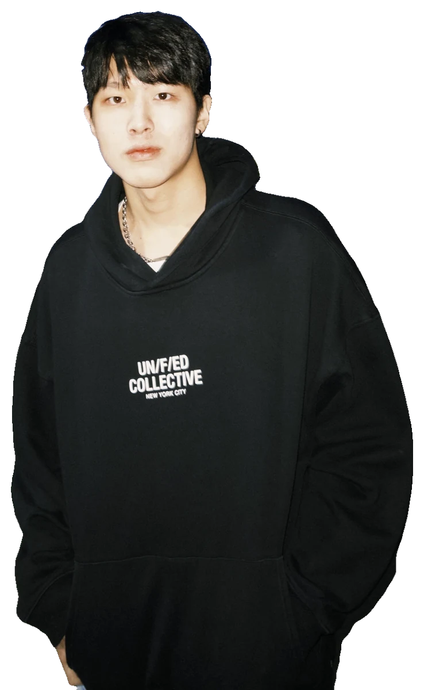

Hi, I’m Frank Wu.
I design and build interfaces that make everyday decisions feel simple.
- UI/UX designer
- Front-end builder
- Sydney → Taipei
(01) What I care about
Everyday decisions,madesimple.


- Research
- User interviews & surveys
- Usability testing
- Personas & journeys
- UI / UX design
- Wireframes & prototypes
- Design systems
- High-fidelity UI
- Front-end
- HTML · CSS · JavaScript
- Responsive layouts
- Shipped on nitori-net.tw
Designed, built, and it sells.


(02)
My work
Nine e-commerce pages for Nitori Taiwan's online store, from seasonal campaigns to product guides. I designed and coded them end to end; six are live.
Open the series →A multi-sensory system that gets shoppers to return trolleys, through gamification and clear feedback.
View case study →A STEM learning platform built to engage students in rural and remote areas.
View case study →A shopping app with AI support, so people can buy clothes with confidence.
View case study →(03) How I work
From the first interview to shipped code, every step is intentional.
- 01
Understand
Interviews, surveys and testing, so every decision rests on real evidence rather than assumptions.
- 02
Shape
Wireframes, prototypes and design systems that turn something complex into something effortless.
- 03
Build
I write the front end myself, so what ships behaves exactly the way it was designed.
- 04
Ship & refine
Launch, read the results, and carry what worked into the next page.
(04) Get in touch